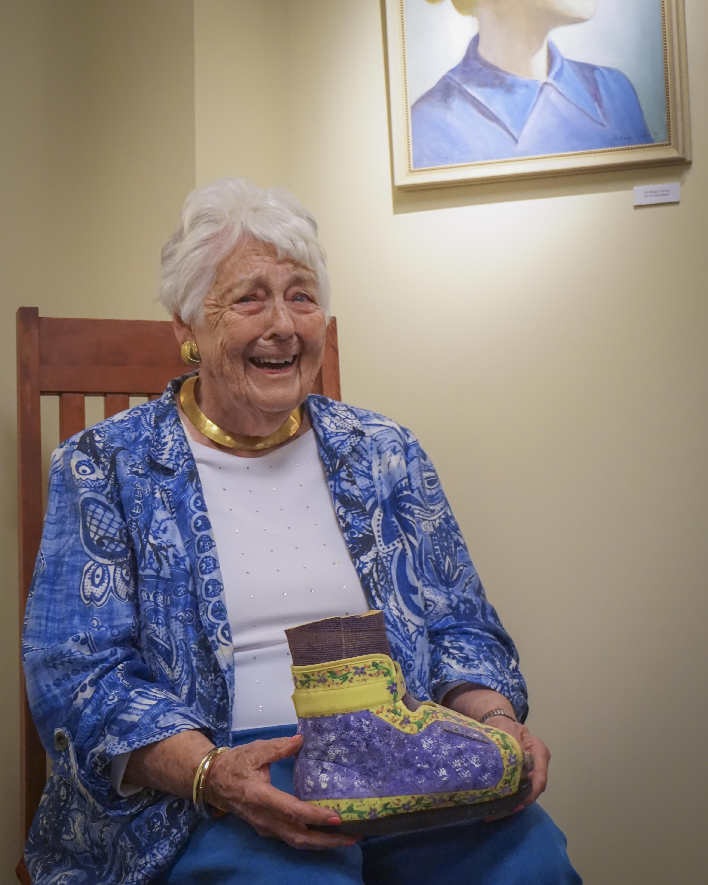
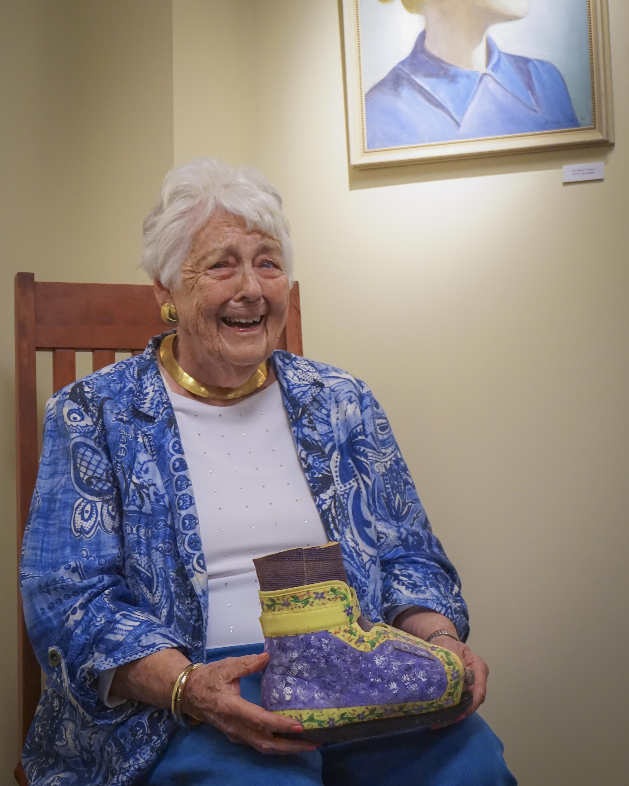

About The Art Show Site
This site was created in 2021 to provide the Behrend community with a virtual art show experience. We hope to update this site with the most recent art show submissions from 2023 and 2024. Students of any major are given the oppurtunity to showcase their artwork which will be displayed in the Irvin Kochel Center. If you are interested in submitting artwork please contact Prof. Tommy Hartung at:tlh5775@psu.edu
About Patricia Yahn
This celebration of the arts wouldn't be possible without the warmth, inspiration, and support of Pat Yahn (1928-2019). She has been a pillar for the arts in the Erie community her whole life. Click here to learn more about Pat Yahn and her contributions to Penn State Behrend. We wish to honor and commemorate her by highlighting some of her quotes and recipe for happiness.
"Where would we be without the arts?"
"You need some joy in your life after all the serious business we handle day after day, good or bad."
"I'm just a little artist who likes to paint..."
- Patricia Yahn
 
